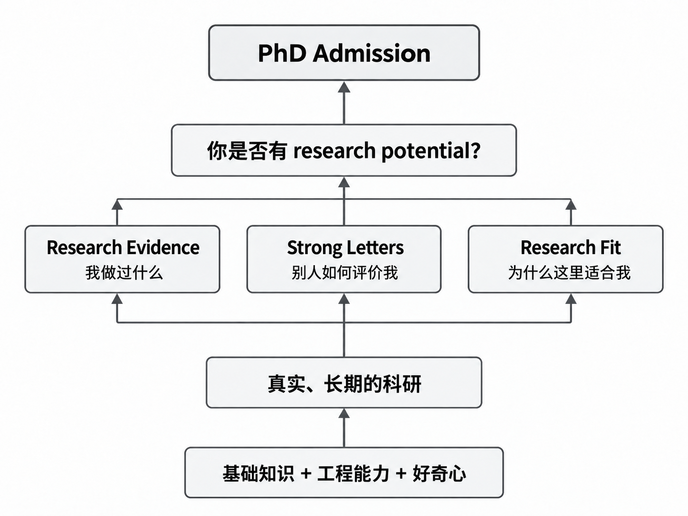
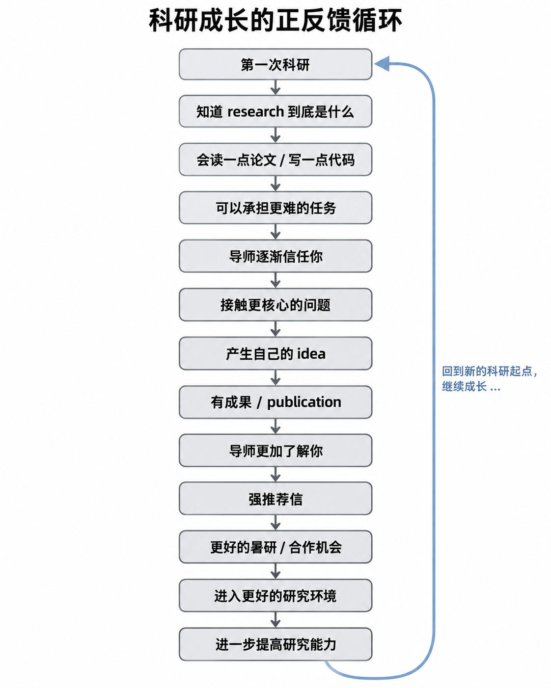

如何在大一开学计划自己的博士申请
PhD 申请在筛选我们什么？
PhD admission 和本科录取、考研最大的不同，是它不是简单按照一个综合分排序。
研究生招生真正试图回答的是：
这个人有没有潜力做科学研究？
prior research、recommendation letters 和 personal statement 是展示你在这个问题上答案的“三板斧”。
其中，推荐信应该是最为重要的一个因素。顶尖项目面对大量“硬条件都很好”的申请者后，推荐信是否能够给出具体的研究成就和判断，可能是最重要的因素之一。
精力分配逻辑
为了打磨好自己这三个“武器”，我们如何准备呢？

上面这个图展示了自下而上的发展过程，在积累了基础的知识和能力后，在研究过程中投入大部分精力解决一个具体问题，还要把自己的“研究画像”想清楚，画明白，想清楚自己为什么要做这个问题，自己在科研发展中是否有连贯性，是否在领域内逐渐建立了深层认知和影响力。
对于大一刚刚入学的新生，我的建议是先不要读论文或前沿的教材，先学好三样东西：一门编程语言（C or Python，当然我建议是C/C++，会对从事底层原理和系统研究有所帮助，这是Python无法代替的），两门数学课（高等数学+线性代数）。这些课程都有极大的学分占比，而且是开展大部分领域研究的基础。
那么如何学习？不要跟着学校的课堂慢慢打磨和刷题，就我的个人经验而言，通过网络资料和AI辅助的方式学习是最高效的方式，足以在2-3个月内学习这些基础知识。所以在大一上学期，大家可以夯实基础，并逐渐发现自己在计算机领域的兴趣点，也可以提前学习一些后续的课程（如体系结构、机器学习）帮助自己发现兴趣。如果像我的本科学校一样比较重视封闭条件下的coding能力，那么建议在大一寒假进行大量力扣算法题目的训练，会给后面减少一些压力和麻烦，也能更加理解这门编程语言。
自学路线和资料分享：https://csdiy.wiki
进入大一下，大家应该对学校的课堂节奏有了经验，也具备了一定的基础，这个时候可以逐步接触导师进入实验室。这里有一个重要的原则：不是先找到一个自己百分之百确定喜欢的方向，然后才开始科研。很多时候恰恰是通过做科研，才知道自己喜欢什么。
本科生找研究导师时，建议从两个维度思考：
- 什么问题让你感兴趣？
- 什么样的人是你愿意一起工作的？
而且应该主动接触多个潜在导师，而不是等一个“完美方向”出现。在研究生涯初期应该主动、提前、快速试错，找到适合自己的道路。在这个阶段，我大概已经8:2甚至9:1分配时间了，中心完全转向科研，开始了准PhD的模式。当然大家一定要守护好自己的GPA，因为这决定了我们的下限。
边际时间原则：
先把基础项维持在健康区间；一旦基础项继续投入的边际收益明显下降，就应该把新增时间投入能够产生 research differentiation 的事情。
为什么要这么早进入研究？
一旦进入了科研阶段，就没必要问“我应该读教材还是读论文”这样的问题，而所有的精力都被分配到“如何找到一个具体问题，解决一个具体问题”上。这样针对具体问题可以有一个最优/最短的学习/实践路径，不必像学习一门课程一样花费大量时间融入一个别人设定的知识逻辑和体系，而是要自己建立这个逻辑和体系。
本科科研的巨大差距，很多时候未必来自天赋差距，而来自开始时间和积累周期。依据下面这张图的正反馈逻辑：

一旦建立起好的正反馈周期，科研生涯即开始复利，越早越好。
做科研是不是发论文？
很多本科生问：“怎么才能发论文？”事实上，PUBLISH是申请中比较重要的因素，但他只是科研的“产品”，不是科研的本身。最近接触了一些professors，普遍的观点是有论文发表会显著提升申请的竞争力，但是不要追求文章的数量，要做有意义的事情，要能够讲清楚自己在论文中的贡献，在论文发展过程中的一些重要decision。
论文非常有用，但不要把论文数量当 objective function。
科研潜力最强的本科生应该是：论文的领域范围尽量收敛，有明确的研究主线和个人画像，并且有1-2篇发表。
推荐信与影响力
推荐信有强有弱，在最终申请委员会评定时的效益差距明显。
强推荐信必须提前很久创造条件：上过老师的课、拿了 A显然是不够的，最好是跟推荐人做过一个或两个学期的 independent study / research。最有价值的是能够写出具体 accomplishment 的推荐信，而不是笼统的“聪明、努力”。推荐信不是申请阶段找老师“要”出来的，而是科研过程中自然长出来的。
海外暑研很有价值，尤其是能够获得海外研究者的认可和推荐，而且 summer research 相比单纯 exchange 更划算。建议大家利用summer break的时间拓展自己的学术关系网，不仅是积累自己的申请基础，还会增益以后的学术发展。
一些经验和建议
1 尽早进入真实环境，而不是等准备充分。
很多能力只有在真正做项目、遇到困难以后才知道该怎么补，起步早比“准备得完美”更重要。
2 让自己成为一个可靠的人。
比起偶尔有一个很聪明的想法，长期按时完成任务、把问题查清楚、对结果负责，更容易获得后续机会。
3 建立自己的反馈循环。
每隔一段时间回看自己现在能独立处理什么、还在哪些地方依赖别人，用这个变化判断自己是不是真的在成长。
4 把失败留下来，而不是只记录成功。
没跑通的实验、错误的判断和被推翻的假设，往往比最终结果更能训练研究直觉。
5 主动把问题往前多想一步。
不要只回答“老师让我做什么”，而要逐渐习惯思考“为什么这样做、还有没有别的解释、下一步最值得验证什么”。
6 选择能产生复利的事情。
一个能让你学到新方法、认识更强的人、接触更难问题的机会，通常比一项只能给简历增加一行的经历更值得投入。
7 不要频繁因为短期结果改变方向。
科研的反馈周期很长，一两个月没有结果并不代表方向错误，重要的是持续判断自己是否在积累能力和认知。
8 少比较履历，多比较能力。
别人有几篇论文、去了哪里暑研只是表象，更值得比较的是自己半年前不会做的事情，现在能不能独立完成。
9 保护长期的精力和兴趣。
本科三年是长跑，持续高质量投入比短时间把日程塞满更重要，真正好的节奏应该是可以维持很多年的。